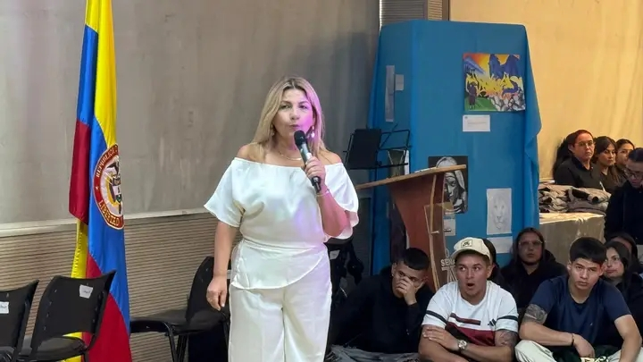
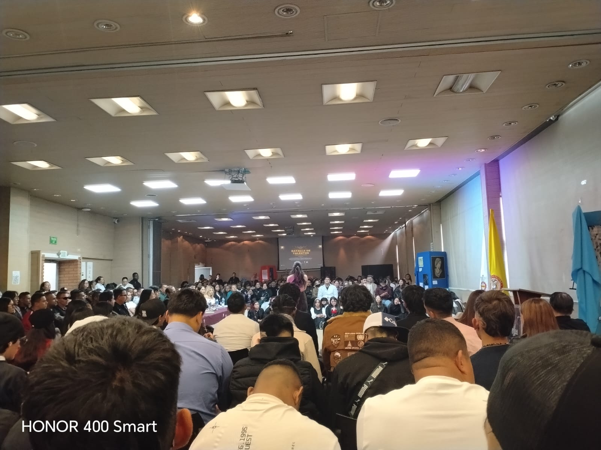

Introducción al Evento
En este sitio web presentare información dela creación de una página relacionada con la Batalla de Talentos SENA 2026 es el escenario donde se reúnen aprendices,instructores,equipo de bienestar y demás invitados y demuestran su habilidad en las diferentes categorías. En este evento se vive la alegría y la participación apoyando a los concursantes de los distintos programas de formación..
Objetivo de la Página
El objetivo principal de esta pagina es mostrar información de nuestra experiencia en el evento de la Batalla de Talentos Sena 2026, este tipo de espacios son muy importantes para poder demostrar nuestras habilidades en algo porque algunas veces no sabemos para que somos buenos.
La Experiencia del Evento
Vivir esta increíble experiencia de la la Batalla de Talentos Sena 2026 es sumergirnos en u espacio que supero por completo nuestras expectativas, compartir este tipo de espacios es vivir emociones, y diferentes tipos de apoyos hacia nuestros compañeros, después de ver esta jornada tan significativa me doy de cuenta que las personas tienen talentos ocultos que no ponemos en práctica. Este tipo de espacios es fundamental para fomentar el trabajo en equipo y fortalecer nuestras habilidades blandas.

